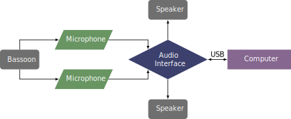

This piece was written for Cassandra Roache in 2022, and it is a very improvisatory piece. The score is a single sheet of paper with a big circle and some instructions surrounding the circle. The piece can be obtained by contacting the composer at his website.
This piece is fairly simple from the perspective of hardware. There are no MIDI controllers or pedals. One or two microphones go into an audio interface, and the output from Max/MSP goes to two speakers. Not mentioned in the score is that in some performances resonant snare drums were also used, as is seen in the video recording.
The setup for this piece is shown below. 
The patch for this piece is shown in the screenshot section. The patch is very easy to follow and has step-by-step instructions. First, the patch operator must load two sound files by clicking on the buttons for step 1 and step 2. The next step is to click on the box by the words Input your current age:, then type the appropriate age, and then press enter. The duration of the piece is dependent on the performer's age. Step 4 is to make sure the audio devices are correct and to turn the audio on. The spacebar is pressed to begin the piece. After the appropriate number of revolutions, the audio will fade out.
As this piece is completely improvisatory, the difficulty is determined by the improvisational abilities of the performer. This can make the piece very simple or difficult depending on the performer. This makes it a great piece to begin learning about live electroacoustic music. Anyone that can play the bassoon (or any instrument) can play this piece. The electronics are very simple to set up as well.
Again, due to the improvisatory nature of the piece, how the piece sounds is largely dependent on the performer. This piece could fit on any recital program without worrying about the reception of the audience.
©2024 by Benjamin Bradshaw
Logo ©2024 by Hannah Bradshaw